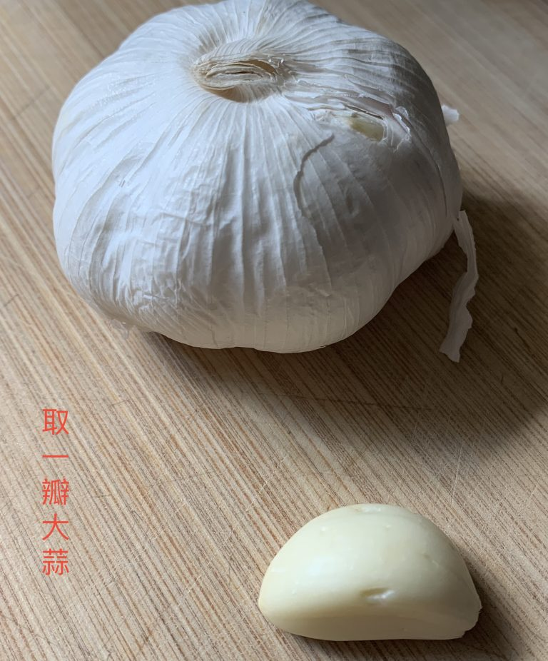
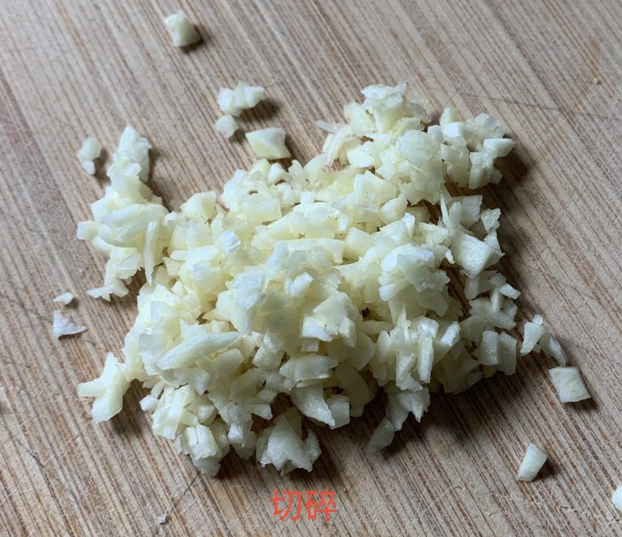
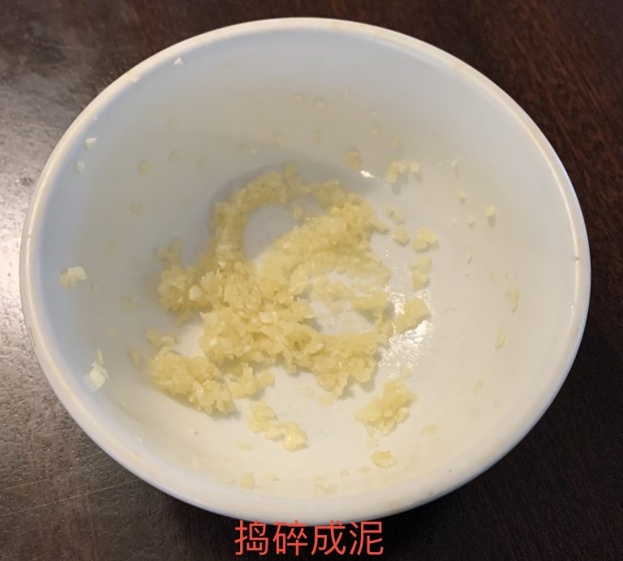
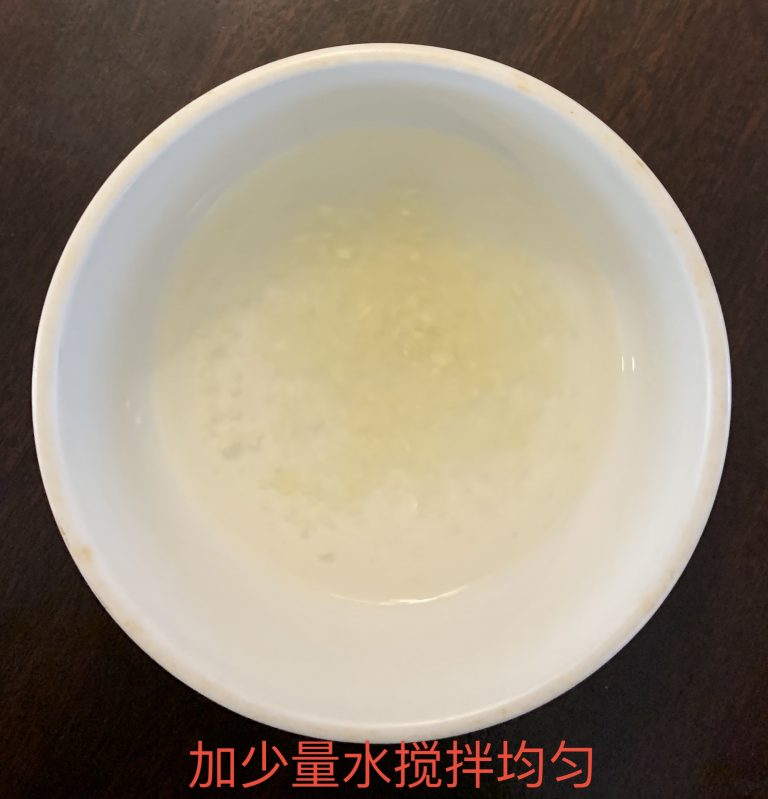

如何提高自身免疫力来抵抗新冠病毒
在新冠疫情期间，除了与他人保持距离，经常洗手和在公共场所配戴口罩外，增强我们的免疫力也同样重要。根据对新冠患者的症状追踪， 有些人在感染冠状病毒后只有轻度的症状，而有些人则出现严重的健康并发症。通常当我们的身体免疫系统在与病毒抗争时，有可能会有过激反应。这种免疫机制也会伤害我们自己的身体的健康细胞。那么当我们的免疫反应被激活时，怎样增强有益于我们身体的抵抗力？
减压
我们每个人都承受着生活中各个方面的压力，例如贷款压力，家庭责任，工作问题，身体状况和人际关系等。我们睡眠不足也可能与压力有关。长期压力会压抑我们的免疫系统并阻碍其抵抗病毒的最优功能。找到健康的方式来释放压力对于提高我们的免疫力至关重要。运动，冥想，瑜伽，太极拳等已被研究并证明对我们的情绪和思想有积极影响 （不建议借酒消愁）。找一个最适合自己的减压方法。调整好自己的睡眠方式保证充足睡眠，每天要保证7-8个小时的睡眠时间。
营养均衡的饮食习惯
我们的身体都是自己“吃”出来的。食物对我们的全方面健康非常重要。我们需要从食物中摄取能使我们的免疫系统发挥有效作用的营养物质，尤其是在我们的免疫系统被激活时，免疫细胞杀死病毒而又不损害自己人体的细胞。那怎样的才算营养均衡饮食呢？我们通常从五种食物中获取营养：谷类，肉类，蔬菜，水果和奶制品。 美国人饮食指南 建议采用健康的饮食习惯成为自己生活方式的一部分，尽量在我们的热量需求范围内选择各种营养丰富的食物和多样性，限制糖，脂肪或钠含量高的食物。正常情况下，按照每天2000卡路里需求的热量，建议从碳水化合物中摄取总热量的45-65％，从蛋白质中摄取10-20%，从脂肪中摄取25-35％，我们盘子中蔬菜和谷物应占3/4的比例，肉类只需占小部分。由于我们想增强抵抗冠状病毒感染的免疫力，所以对优质蛋白质食物，蔬菜和水果都要保证有足够的摄取。这里要建议蛋白质比例可以调高到至少20%，我们需要足够的蛋白质来促成足够的抗体和免疫细胞合成，同时我们要足够的抗氧化素消除炎症反应期间所产生的大量自由基。适当的调整饮食比例有针对性的提高我们的免疫系统会有一定的效果。
蛋白质
综上所述，我们还需要有足够的蛋白质储备来生产免疫细胞，例如抗体，白细胞合成等。美国人习惯将饮用大量的鸡汤用来治疗感冒或流感。这种传统家庭疗法已经在美国流行了几百年，历史证明应该是有些效果的。研究人员对它背后的科学产生了兴趣，并对其进行了研究来发现喝鸡汤是否真具有治疗感冒的效果。许多研究表明，鸡汤具有一定的抗炎作用，并能帮助稀释鼻腔和喉咙的粘液。鸡汤中有来自鸡胸肉的肌肽（carnosine) 可能有助于抑制流感或感冒病毒感染引起的促炎性问题。通常含肌肽的食物有猪牛肉，鱼，鸡肉，鸡蛋等。
抗氧化剂
针对冠状病毒感染所引起的免疫反应，某些维生素和矿物质可能起到缓解氧化过激反应的作用。它们包括维生素C，D，E和锌等。对于维生素C和锌补充剂的研究表明，维C和锌结合使用可缩短和减弱感冒或流感所引起的症状。维生素D会通过增强白血球对抗病原体的作用来促进免疫功能，白血球细胞就像我们抗击病毒的重要士兵。我们可以通过户外活动接受阳光照射我们的皮肤来实现体内合成维生素D。如果我们不常出门的而得不到足够的太阳光沐浴，那么我们可以通过服用维生素D来补充。维生素E（溶脂性）也是一种抗氧化剂，它的一个作用是可保护细胞膜的完整性。维E可以防止或修复人体细胞膜在炎症反应过程中受到的氧化损伤。如果我们摄入的食物中的以上营养成分不足（通常在感染过程中需要较大剂量），则可以服用补充剂以弥补以上营养物质的大量损耗。（服用前也请先咨询您的医生，避免和其他药物有反作用）。
水分和电解质
我经常对我的家人和病人强调我们一定要喝大量的水分来补充流感或是感冒期间流失的水分，特别是有以下一种或多种症状表现的，例如恶心，呕吐，腹泻，发烧，鼻塞等，在补充水分的同时，我们还需要补充电解质。脱水（身体缺少水分）会使我们的病毒感染症状恶化，甚至延长恢复时间。补充水分和电解质的选择有Pedialytes（儿童），Gatorade（糖尿病患者可选 Zero Gatorade），果汁（糖尿病患者慎用），鸡汤，柠檬茶，姜汁，姜茶等。不建议使用含咖啡因的饮料和酒精饮料。如果有腹泻症状，请避免喝牛奶。
大蒜




大蒜增强免疫功能的原因是大蒜中含有大蒜素，碾碎后经过一定时间的氧气反应后，大蒜素就会变成活性大蒜素以及其他含硫化合物。活性大蒜素和其他含硫化合物可增强某些类型白细胞的抗病能力从而达到增强免疫力的作用。我和我的家人用大蒜来预防感冒已经有3-4年了，亲身经历真实有效，而且大蒜还超便宜。但是患有GERD（胃酸返流）或胃部不适的人应谨慎使用，因为大蒜会刺激胃壁而引起不适。通常当我的喉咙感觉有些不对劲时，我立即拿一瓣大蒜切成薄片并压碎成浆末。然后在空气中放置10-15分钟，让它与空气有足够的时间产生化学反应。最后我加入少量的水充分搅拌，喝下去。不要立即漱口，让大蒜气味弥漫在口腔，咽喉和鼻子（建议在吃之前可以先刷牙）。一晚好觉，早上醒来我没有任何感冒症状，把流感扼杀在摇篮中：）。此疗法的一个重要提示是，您必须在发觉喉咙有问题的时候及时使用它，一旦喉咙已经发痛发炎了，或是已经出现发烧，腹泻，流鼻涕等感冒症状了，那么使用大蒜的预防作用就会大打折扣。
姜
姜 不仅具有抗炎和抗氧化特性，而且还具有一些抗癌的作用。 这些健康益处可能是由姜含有的功能性化学物质（包括姜醇，shogaol和paradols）引起的。姜还可以帮助缓解在冠状病毒感染期间可能出现的恶心和呕吐症状。我通常向胃部不适有恶心呕吐症状的病人推荐姜汁饮料（ginger ale) 和饼干。而对于新冠病毒，我认为服用姜茶或是姜汤水是很不错的选择。洋葱
洋葱含有大量的硒（selenium)，硫化合物 (sulfur compound)，锌 (zinc)，维生素C和槲皮素（类黄酮, quercetin)。洋葱能提供一个健康的免疫系统所需的大量营养素。硒在病毒感染初期有助于启动人体的免疫反应。槲皮素是一种类黄酮 ，是抗氧化剂的一种，可帮助缓解炎症反应期间的氧化应激压力 。 洋葱确实是一个宝，建议大家增加对洋葱的食用，而且用于炒菜时还挺香。
人参
在中国，人参广泛用于中医药已有悠久历史了，它有增强身体保健功能的作用。经研究 人参有许多有益健康的价值，包括维持人体免疫系统的平衡。人参会影响不同类型的免疫细胞，它可以强化免疫细胞的抗病毒和抗菌性从而清除病毒或细菌感染。人参可以泡成参茶，蜂蜜人参茶等饮品食用，或者你可以将人参添加到鸡汤中熬汤，可以把抗病毒疗效再提高一倍。
祝生活安全又健康
由于新冠病毒大流行已经影响了全球人民，及时评估我们的健康状况并根据自己的需要调整饮食计划，建立强大的免疫系统至关重要。希望通过本文能给大家带来一点建设性的建议，过的安全又健康！
Back to Top
© 2022 Leading a Life of Wellness